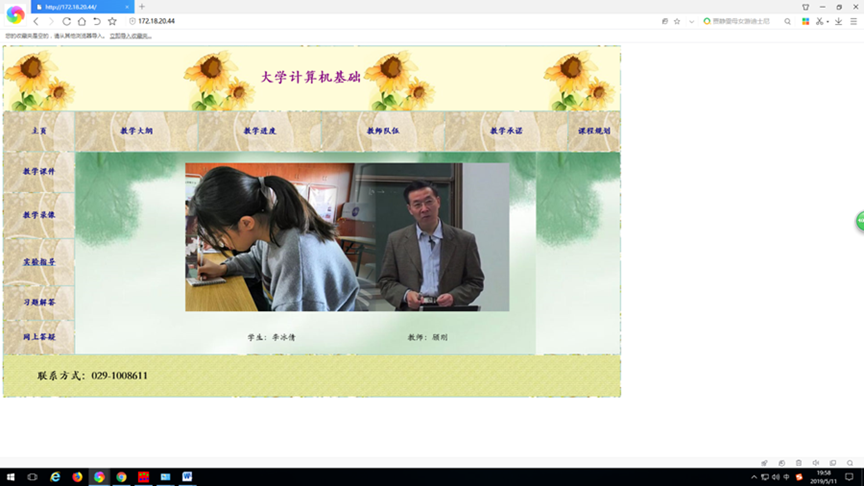
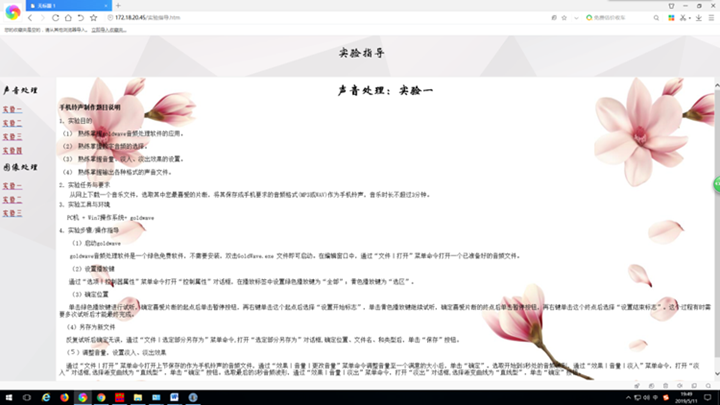
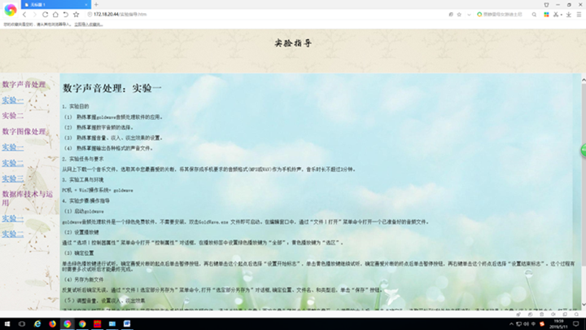
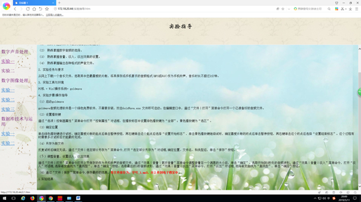
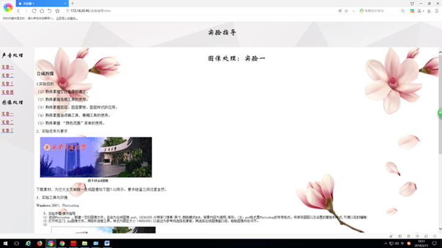
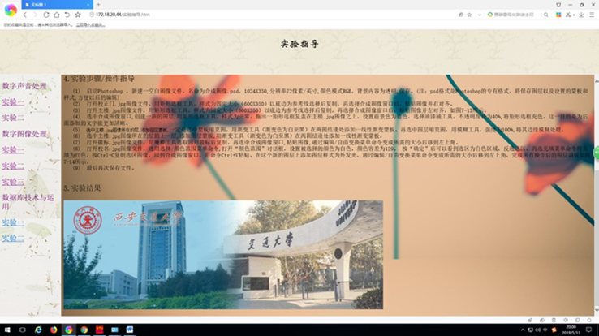

西安交通大学实验报告
课程：大学计算机基础 实验名称：计算机网络技术及应用
第 页 共 页
系 别：ACCA 实 验 日 期： 2019年 5 月 11 日
专业班级：ACCA82 组别_____________ 实 验 报 告 日 期 2019 年 5 月 11 日
姓 名：高晶 学号：2181421978 报 告 退 发 ( 订正 、 重做 )
同 组 人：李冰倩 教 师 审 批 签 字
(1) 了解sharepoint designer 2007基本用法
(2) 掌握网站的创建
(3) 掌握框架网页的创建
(4) 掌握网页的制作






通过此次实验，我了解了SharePoint designer2007的用法，学会了如何制作网站，学会了制作并发布网页。